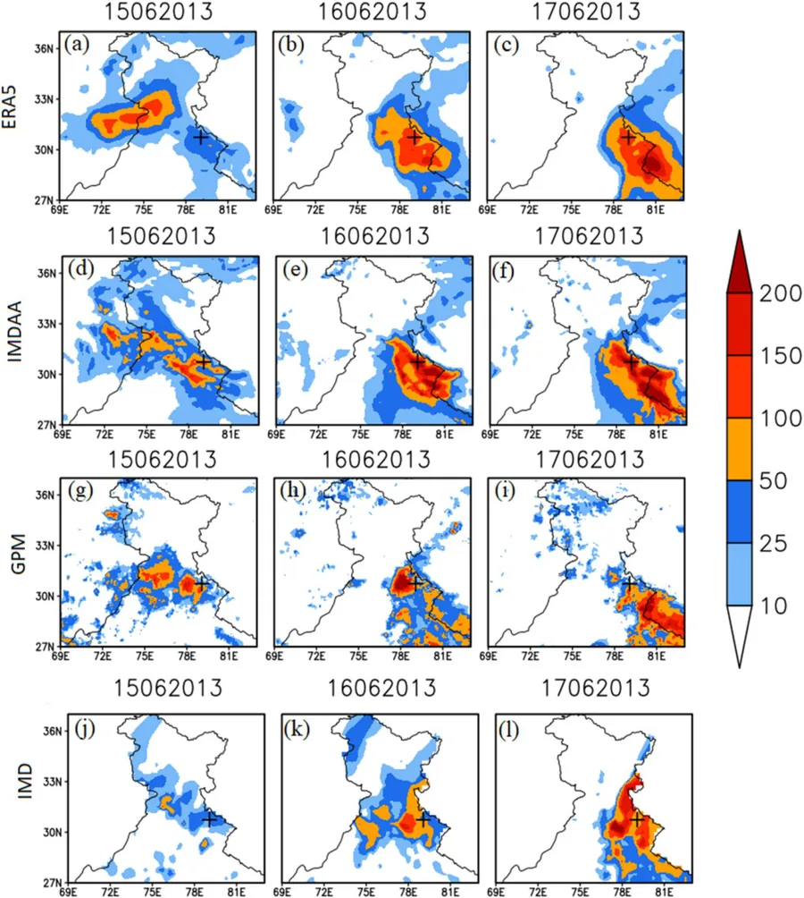
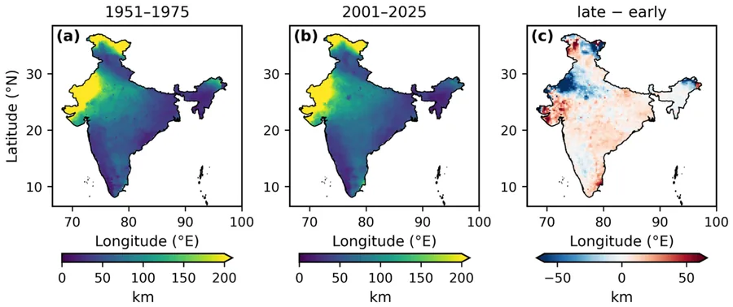
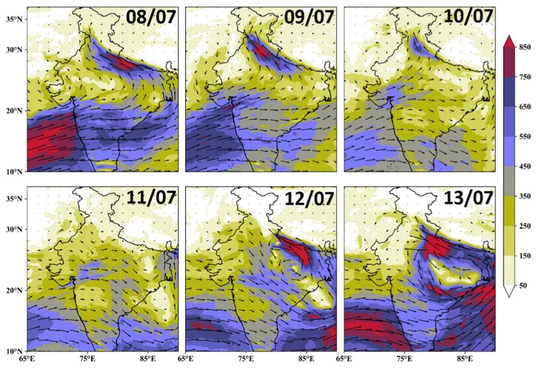
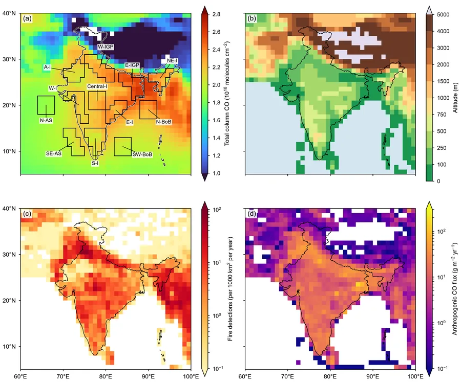

Dr. Nitin Lohan
Atmospheric scientist and applied mathematician
Department of Earth and Atmospheric Sciences, National Institute of Technology Rourkela, India
I study extreme rainfall over India and the Himalaya: how it forms, how well weather models capture it, and how its statistics are changing in a warming climate.
Citation metrics from Google Scholar, September 2026.
Mathematics for a monsoon country
I am an applied mathematician working in atmospheric science. As a National Post-Doctoral Fellow in the Department of Earth and Atmospheric Sciences at NIT Rourkela, I work on numerical and machine-learning forecasting over the Himalayan region.
My doctoral research at Gautam Buddha University (Ph.D. in Applied Mathematics, 2026) combined diagnostic analysis with WRF/WRFDA modelling to study heavy-precipitation events over India: Himalayan cloudbursts, monsoon low-pressure systems and tropical cyclones. I have worked with scientists at the India Meteorological Department (IMD), NCMRWF and IITM, and taught engineering mathematics at G.L. Bajaj Institute of Technology and Management.
Alongside research, I work as an AI trainer and STEM benchmark developer with Mercor, Turing, micro1 and Handshake AI, designing mathematics, scientific-coding and inverse-problem tasks used to train and evaluate large language models.
Experience and educationWhat I work on
Four connected threads: observing extreme rain, modelling it, measuring how its statistics change, and tracking the atmosphere's composition from space.

Himalayan cloudbursts
Diagnosing cloudbursts and extreme rain events, and validating reanalysis and satellite rainfall against observations.

Monsoon rainfall extremes
Extreme-value statistics of 75 years of Indian monsoon rainfall: return levels, trends and spatial footprint.

Weather modelling
WRF and WRFDA simulations with 3DVAR data assimilation, and physics sensitivity for extreme events.

Atmosphere from space
Two decades of satellite carbon-monoxide retrievals over India's land and ocean regions.
{kind=link}
Monsoon rainfall extremes are clustering over larger areas
Rainfall extremes over India are becoming more intense at single locations. This study asks a different question: are extremes also striking together over larger areas?
- 75 years (1951–2025) of IMD 0.25° daily rainfall.
- Over Peninsular India, the distance over which extremes co-occur grew from 56 km to 76 km between 1951–1975 and 2001–2025: a 36% expansion.
- The largest connected area of extreme rain on a day grew by about 40%.
- Joint flood risk is growing faster than point-by-point return levels suggest.
Recent updates
Milestones from the last two years.
- Joined NIT Rourkela as a National Post-Doctoral Fellow in the Department of Earth and Atmospheric Sciences.
- Published in Atmosphere: “Reorganization of the spatial dependence structure of Indian summer monsoon rainfall extremes, 1951–2025”.
- Defended my Ph.D. thesis on heavy-precipitation events over India at Gautam Buddha University.
- Started AI training and STEM benchmark work with Mercor, Turing, micro1 and Handshake AI.
- Joined G.L. Bajaj Institute of Technology and Management as Assistant Professor (Mathematics).
- Four journal articles published: Earth Systems and Environment, Geomatics, Natural Hazards and Risk, Sustainability and Theoretical and Applied Climatology.
Open to collaboration
I welcome collaborations on extreme-weather diagnostics, numerical modelling, rainfall statistics and machine-learning forecasting.